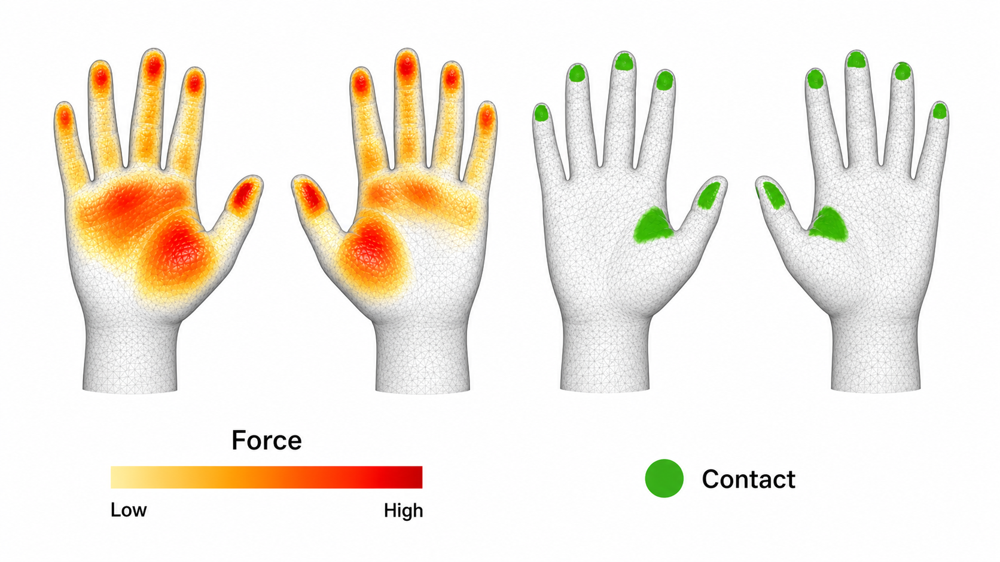
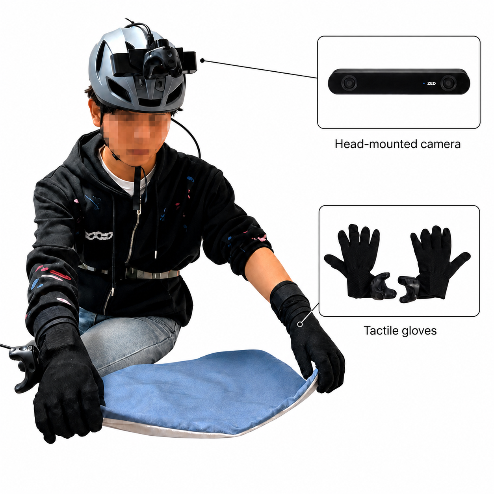
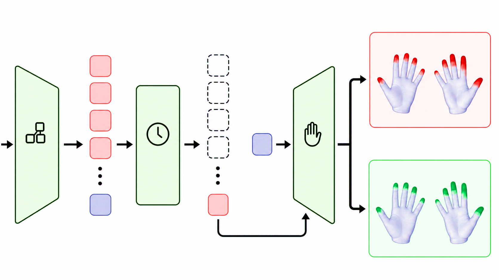
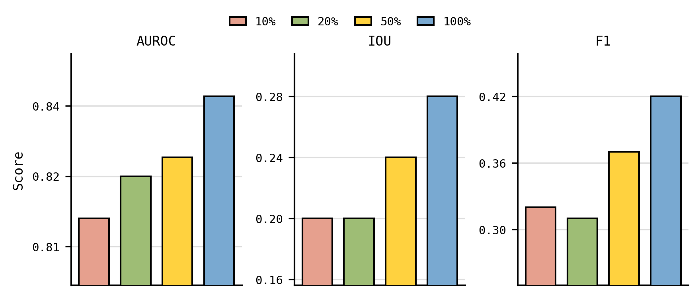

NeurIPS 2026/Project page
Seeing is
touching.
EgoTac predicts dense tactile force and contact directly from unconstrained egocentric video.
1 Shanghai Qi Zhi Institute · 2 Shanghai Jiao Tong University · 3 Tsinghua University · 4 Fudan University
Continuous force

Binary contact
01 The idea
What if we could recover how an interaction feels from how it looks?
Human video is abundant, contact-rich, and easy to scale. Tactile data is not. EgoTac bridges this gap by learning a shared representation of touch across continuous force measurements and binary contact labels.
Once trained, it can add tactile priors to existing egocentric video—without gloves, force sensors, or object models at inference time.

EgoTac-SC capture system
02 Unified data
One tactile language.
Many data sources.
EgoTac aligns heterogeneous sources to the MANO hand surface, pairing a self-collected force dataset with large-scale hand–object interaction datasets that provide contact supervision.
01Egocentric RGBFirst-person interaction video
02Mixed supervisionForce + geometric contact
03MANO alignmentA shared dense hand topology
03 Model
From visual dynamics
to dense touch.
A compact encoder–decoder turns temporal visual context into per-vertex force and contact predictions.

See
A pretrained vision transformer extracts spatial-semantic tokens from an egocentric clip.
Fuse
Temporal fusion captures interaction dynamics—the onset, duration, and release of touch.
Decode
A tactile decoder with adaptive layer normalization produces force and contact over both hands.
04 Zero-shot generalization
Touch,
in the wild.
EgoTac transfers beyond its training environments to unconstrained, third-party egocentric videos. It identifies the active hand and tracks fine-grained contact changes through long interactions.
Scaling behavior
More data.
More data.
Better touch.
Performance improves steadily as training volume grows, indicating a practical path toward video-scale tactile understanding.

05 Abstract
A scalable path from pixels to physical interaction.
Touch is fundamental to dexterous manipulation, yet most egocentric human data increasingly used for robot learning lacks tactile information. Directly collecting tactile data at scale is difficult, while human video is abundant.
We introduce EgoTac, a generalizable model that predicts rich tactile information directly from egocentric human videos. Trained on over 5.7M image–tactile pairs, it learns from both continuous force measurements and binary contact. EgoTac achieves strong in-domain force prediction, outperforms prior contact estimation on out-of-domain benchmarks, and enables zero-shot tactile prediction on unconstrained video.
Read the full paper ↗06 Citation
If our work helps
your research.
Please cite EgoTac using the BibTeX entry.
@misc{zhang2026egotac,
title = {EgoTac: In-the-wild Tactile Prediction
from Egocentric Vision},
author = {Zhang, Wenkang and Yuan, Chengbo and
Zhang, Zicheng and Cheng, Zhengxue and Gao, Yang},
year = {2026},
eprint = {2608.15060},
archivePrefix = {arXiv},
primaryClass = {cs.CV}
}